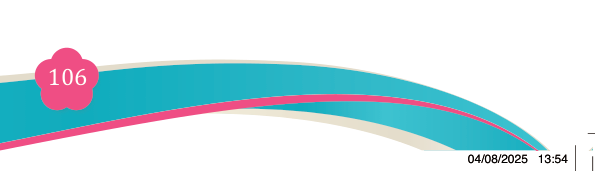
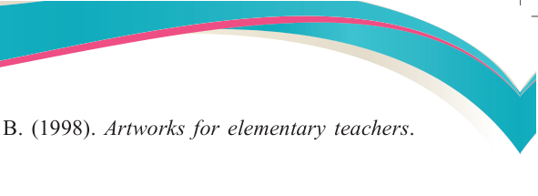

Fine Art for Secondary Schools

106


Student’s Book Form Two

Herberholz, D., & Herberholz, B. (1998). Artworks for elementary teachers.

McGraw- Hill.
Iseminger, G., (2004). the aesthetic function of art. Cornell University Press,
John, C. (1980). What is art? An introduction to painting, sculpture and architecture.
McGraw-Hill, Inc.)
Getlein, M. (2019). Living with art (11th edition). New York, McGraw-Hill.
Herberholz, D., & B. Herberholz. (2002). Artworks for elementary teachers:
Developing artictic and perceptual awarenes. Boston, McGraw-Hill.
Mittler, G., & J. Howze. (1988). Creating and understanding drawings. New York,
Glencoe.
Mittler, G., & R. Ragans. (1992). Exploring art. Boston, McGraw-Hill.
Msangi, K. F. (1975). Art handbook for schools. Dar es Salaaam, Tanzania
Publishing House.
Ocvirk, O. (1992). Art fundamentals: Theory and practice. Boston, McGraw Hill.
TIE. (2010). Fine art syllabus for secondary school form I-IV. Dar es Salaaam,
Tanzania Institute of Education.
TIE. (2011). Fine art teachers manual for ordinary secondary education. Dar es
Salaaam, Tanzania Institute of Education.
Vazquez, A. (1979). Art and society: Essay in Marxist aesthetics. London,
Whitstable Litho Ltd.
Zoltan, S. (1999). Colour by colour: Guide to water colour. Cintinnati, North
Light Books

04/08/2025 13:54